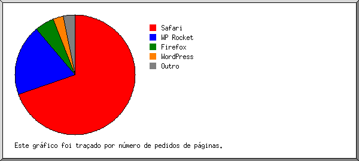

Estatísticas do Servidor Web de audicore.com.br
Estatísticas do Servidor Web de audicore.com.br
Começo do programa em Sex-19-Set-2025 03:19.
Análise de pedidos desde Sex-15-Ago-2025 00:33 até Qui-18-Set-2025 22:35 (34,92 dias).
Estatísticas do Servidor Web de audicore.com.brComeço do programa em Sex-19-Set-2025 03:19.
Análise de pedidos desde Sex-15-Ago-2025 00:33 até Qui-18-Set-2025 22:35 (34,92 dias).
(Ir a: Início | Sumário Geral | Relatório Mensal | Resumo Diário | Resumo Horário | Relatório de Domínios | Relatório de organizações | Relatório de referência redireccionada | Relatório de referência falhada | Relatório do sítio de referência | Relatório de Leitores | Resumo de Leitores | Relatório de Sistemas Operativos | Relatório de Códigos de Estado | Relatório de Tamanho de Ficheiro | Relatório de Tipos de Ficheiro | Relatório de Directorias | Relatório de Pedidos)
Os valores entre parêntesis referem-se aos 7 dias até 19-Set-2025 03:19.
Pedidos atendidos: 9 306 (766)
Número médio de pedidos atendidos por dia: 266 (109)
Pedidos de páginas atendidos: 700 (62)
Número médio de pedidos de páginas atendidos por dia: 20 (8)
Pedidos não atendidos: 464 (5)
Pedidos redirigidos: 99 (3)
Ficheiros diferentes solicitados: 2 774 (2 847)
Servidores diferentes atendidos: 259 (393)
Tráfego total: 95,17 megabytes (7,15 megabytes)
Tráfego médio transferido por dia: 2,73 megabytes (1,02 megabytes)
(Ir a: Início | Sumário Geral | Relatório Mensal | Resumo Diário | Resumo Horário | Relatório de Domínios | Relatório de organizações | Relatório de referência redireccionada | Relatório de referência falhada | Relatório do sítio de referência | Relatório de Leitores | Resumo de Leitores | Relatório de Sistemas Operativos | Relatório de Códigos de Estado | Relatório de Tamanho de Ficheiro | Relatório de Tipos de Ficheiro | Relatório de Directorias | Relatório de Pedidos)
Cada unidade ( ) representa 15 pedidos de páginas ou fracção.
) representa 15 pedidos de páginas ou fracção.
| mês | N.ped | Pgs. | |
|---|---|---|---|
| Ago 2025 | 6384 | 446 |     |
| Set 2025 | 2922 | 254 | |
Mês mais movimentado: Ago 2025 (446 pedidos de páginas).
(Ir a: Início | Sumário Geral | Relatório Mensal | Resumo Diário | Resumo Horário | Relatório de Domínios | Relatório de organizações | Relatório de referência redireccionada | Relatório de referência falhada | Relatório do sítio de referência | Relatório de Leitores | Resumo de Leitores | Relatório de Sistemas Operativos | Relatório de Códigos de Estado | Relatório de Tamanho de Ficheiro | Relatório de Tipos de Ficheiro | Relatório de Directorias | Relatório de Pedidos)
Cada unidade () representa 6 pedidos de páginas ou fracção.
| dia | N.ped | Pgs. | |
|---|---|---|---|
| Dom | 2943 | 139 | |
| Seg | 271 | 38 | |
| Ter | 339 | 32 | |
| Qua | 1109 | 40 | |
| Qui | 165 | 25 | |
| Sex | 2760 | 269 |  |
| Sab | 1719 | 157 | |
(Ir a: Início | Sumário Geral | Relatório Mensal | Resumo Diário | Resumo Horário | Relatório de Domínios | Relatório de organizações | Relatório de referência redireccionada | Relatório de referência falhada | Relatório do sítio de referência | Relatório de Leitores | Resumo de Leitores | Relatório de Sistemas Operativos | Relatório de Códigos de Estado | Relatório de Tamanho de Ficheiro | Relatório de Tipos de Ficheiro | Relatório de Directorias | Relatório de Pedidos)
Cada unidade () representa 4 pedidos de páginas ou fracção.
| h | N.ped | Pgs. | |
|---|---|---|---|
| 00 | 47 | 25 | |
| 01 | 74 | 17 | |
| 02 | 41 | 13 | |
| 03 | 74 | 19 | |
| 04 | 87 | 11 | |
| 05 | 33 | 6 | |
| 06 | 199 | 21 | |
| 07 | 267 | 24 | |
| 08 | 131 | 18 | |
| 09 | 53 | 18 | |
| 10 | 180 | 10 | |
| 11 | 1934 | 91 | |
| 12 | 612 | 52 | |
| 13 | 342 | 23 | |
| 14 | 129 | 4 | |
| 15 | 440 | 30 | |
| 16 | 172 | 9 | |
| 17 | 343 | 25 | |
| 18 | 182 | 9 | |
| 19 | 216 | 12 | |
| 20 | 1728 | 57 | |
| 21 | 1633 | 166 | |
| 22 | 372 | 35 | |
| 23 | 17 | 5 | |
(Ir a: Início | Sumário Geral | Relatório Mensal | Resumo Diário | Resumo Horário | Relatório de Domínios | Relatório de organizações | Relatório de referência redireccionada | Relatório de referência falhada | Relatório do sítio de referência | Relatório de Leitores | Resumo de Leitores | Relatório de Sistemas Operativos | Relatório de Códigos de Estado | Relatório de Tamanho de Ficheiro | Relatório de Tipos de Ficheiro | Relatório de Directorias | Relatório de Pedidos)
Mostrando os domínios, ordenados por quantidade de tráfego.
| N.ped | %bytes | domínio |
|---|---|---|
| 9293 | 99,99% | [endereço numérico não traduzido] |
| 13 | 0,01% | [domínio não indicado] |
(Ir a: Início | Sumário Geral | Relatório Mensal | Resumo Diário | Resumo Horário | Relatório de Domínios | Relatório de organizações | Relatório de referência redireccionada | Relatório de referência falhada | Relatório do sítio de referência | Relatório de Leitores | Resumo de Leitores | Relatório de Sistemas Operativos | Relatório de Códigos de Estado | Relatório de Tamanho de Ficheiro | Relatório de Tipos de Ficheiro | Relatório de Directorias | Relatório de Pedidos)
Mostrando as 20 primeiras organizações por número de pedidos, ordenadas por número de pedidos.
| N.ped | %bytes | organização |
|---|---|---|
| 5152 | 71,52% | 189.6 |
| 1534 | 2,17% | 177.154 |
| 816 | 9,41% | 191.58 |
| 233 | 0,89% | 66.249 |
| 201 | 2,37% | 104 |
| 181 | 1,94% | 34 |
| 118 | 1,16% | 179.214 |
| 89 | 1,48% | 3 |
| 80 | 0,61% | 54 |
| 73 | 1,06% | 189.125 |
| 69 | 0,73% | 35 |
| 63 | 0,59% | 179.174 |
| 59 | 0,59% | 179.245 |
| 59 | 0,63% | 149.57 |
| 49 | 0,53% | 191.181 |
| 48 | 0,55% | 208.54 |
| 48 | 0,55% | 45 |
| 45 | 0,25% | 52 |
| 44 | 0,24% | 40 |
| 42 | 0,29% | 51 |
| 303 | 2,44% | [não listadas: 57 organizações] |
(Ir a: Início | Sumário Geral | Relatório Mensal | Resumo Diário | Resumo Horário | Relatório de Domínios | Relatório de organizações | Relatório de referência redireccionada | Relatório de referência falhada | Relatório do sítio de referência | Relatório de Leitores | Resumo de Leitores | Relatório de Sistemas Operativos | Relatório de Códigos de Estado | Relatório de Tamanho de Ficheiro | Relatório de Tipos de Ficheiro | Relatório de Directorias | Relatório de Pedidos)
Mostrando os URLs de referência, ordenados por número de pedidos redireccionados.
(Ir a: Início | Sumário Geral | Relatório Mensal | Resumo Diário | Resumo Horário | Relatório de Domínios | Relatório de organizações | Relatório de referência redireccionada | Relatório de referência falhada | Relatório do sítio de referência | Relatório de Leitores | Resumo de Leitores | Relatório de Sistemas Operativos | Relatório de Códigos de Estado | Relatório de Tamanho de Ficheiro | Relatório de Tipos de Ficheiro | Relatório de Directorias | Relatório de Pedidos)
Mostrando os URLs de referência, ordenados por número de pedidos falhados.
(Ir a: Início | Sumário Geral | Relatório Mensal | Resumo Diário | Resumo Horário | Relatório de Domínios | Relatório de organizações | Relatório de referência redireccionada | Relatório de referência falhada | Relatório do sítio de referência | Relatório de Leitores | Resumo de Leitores | Relatório de Sistemas Operativos | Relatório de Códigos de Estado | Relatório de Tamanho de Ficheiro | Relatório de Tipos de Ficheiro | Relatório de Directorias | Relatório de Pedidos)
Mostrando os sítios de referência, ordenados por número de pedidos.
| N.ped | sítio |
|---|---|
| 7083 | https://audicore.com.br/ |
| 136 | http://audicore.com.br/ |
| 48 | http://www.wotbox.com/ |
| 8 | https://br.leia7410.com.br:2083/ |
| 2 | https://www.google.com/ |
| 2 | https://br.leia7410.com.br:2087/ |
| 1 | https://chatgpt.com/ |
| 1 | https://www.canva.com/ |
| 1 | https://rankmath.com/ |
(Ir a: Início | Sumário Geral | Relatório Mensal | Resumo Diário | Resumo Horário | Relatório de Domínios | Relatório de organizações | Relatório de referência redireccionada | Relatório de referência falhada | Relatório do sítio de referência | Relatório de Leitores | Resumo de Leitores | Relatório de Sistemas Operativos | Relatório de Códigos de Estado | Relatório de Tamanho de Ficheiro | Relatório de Tipos de Ficheiro | Relatório de Directorias | Relatório de Pedidos)
Mostrando os 40 primeiros leitores por número de pedidos de páginas, ordenados por número de pedidos de páginas.
| N.ped | Pgs. | Leitor |
|---|---|---|
| 4050 | 149 | Mozilla/5.0 (Windows NT 10.0; Win64; x64) AppleWebKit/537.36 (KHTML, like Gecko) Chrome/139.0.0.0 Safari/537.36 |
| 131 | 131 | WP Rocket/Preload |
| 118 | 118 | WP Rocket/Preload Mozilla/5.0 (iPhone; CPU iPhone OS 9_1 like Mac OS X) AppleWebKit/601.1.46 (KHTML, like Gecko) Version/9.0 Mobile/13B143 Safari/601.1 |
| 24 | 24 | Mozilla/5.0 (X11; Linux i686; rv:109.0) Gecko/20100101 Firefox/120.0 |
| 65 | 21 | Mozilla/5.0 (Macintosh; Intel Mac OS X 10_15_7) AppleWebKit/537.36 (KHTML, like Gecko) Chrome/108.0.0.0 Safari/537.36 |
| 1275 | 20 | WordPress/6.8.2; https://audicore.com.br |
| 18 | 18 | Mozilla/5.0 (Windows NT 10.0; Win64; x64)AppleWebKit/537.36 (KHTML, like Gecko) Chrome/66.0.3359.181 Safari/537.36 |
| 982 | 17 | Mozilla/5.0 (Macintosh; Intel Mac OS X 10_15_7) AppleWebKit/537.36 (KHTML, like Gecko) Chrome/139.0.0.0 Safari/537.36 |
| 26 | 14 | Mozilla/5.0 (X11; Linux x86_64) AppleWebKit/537.36 (KHTML, like Gecko) Chrome/139.0.0.0 Safari/537.36 |
| 116 | 9 | Mozilla/5.0 (iPhone; CPU iPhone OS 18_6_2 like Mac OS X) AppleWebKit/605.1.15 (KHTML, like Gecko) Version/18.6 Mobile/15E148 Safari/604.1 |
| 77 | 9 | Mozilla/5.0 AppleWebKit/537.36 (KHTML, like Gecko; compatible; bingbot/2.0; +http://www.bing.com/bingbot.htm) Chrome/116.0.1938.76 Safari/537.36 |
| 7 | 7 | Mozilla/5.0 (Linux; Android 6.0.1; Nexus 5X Build/MMB29P) AppleWebKit/537.36 (KHTML, like Gecko) Chrome/138.0.7204.183 Mobile Safari/537.36 (compatible; Googlebot/2.1; +http://www.google.com/bot.html) |
| 5 | 5 | Mozilla/5.0 (Linux; Android 6.0.1; Nexus 5X Build/MMB29P) AppleWebKit/537.36 (KHTML, like Gecko) Chrome/138.0.7204.183 Mobile Safari/537.36 (compatible; GoogleOther) |
| 66 | 4 | Mozilla/5.0 (Macintosh; Intel Mac OS X 10_15_7) AppleWebKit/537.36 (KHTML, like Gecko) Chrome/140.0.0.0 Safari/537.36 |
| 41 | 4 | Mozilla/5.0 (X11; Linux x86_64) AppleWebKit/537.36 (KHTML, like Gecko) Chrome/132.0.0.0 Safari/537.3 |
| 3 | 3 | Mozilla/5.0 (Linux; Android 6.0.1; Nexus 5X Build/MMB29P) AppleWebKit/537.36 (KHTML, like Gecko) Chrome/139.0.7258.154 Mobile Safari/537.36 (compatible; Googlebot/2.1; +http://www.google.com/bot.html) |
| 98 | 3 | Mozilla/5.0 (Windows NT 10.0; Win64; x64) AppleWebKit/537.36 (KHTML, like Gecko) Chrome/140.0.0.0 Safari/537.36 |
| 3 | 3 | Mozilla/5.0 (X11; Linux x86_64; rv:139.0) Gecko/20100101 Firefox/139.0 |
| 7 | 3 | WhatsApp/2.23.20.0 |
| 67 | 3 | Mozilla/5.0 (Linux; Android 10; K) AppleWebKit/537.36 (KHTML, like Gecko) Chrome/138.0.0.0 Mobile Safari/537.36 (compatible; Google-Read-Aloud; +https://support.google.com/webmasters/answer/1061943) |
| 6 | 3 | Mozilla/5.0 (Macintosh; Intel Mac OS X 10_15_7) AppleWebKit/537.36 (KHTML, like Gecko) Chrome/131.0.0.0 Safari/537.36 |
| 69 | 3 | Mozilla/5.0 (iPhone; CPU iPhone OS 18_6 like Mac OS X) AppleWebKit/605.1.15 (KHTML, like Gecko) Version/26.0 Mobile/15E148 Safari/604.1 |
| 57 | 3 | Mozilla/5.0 (Windows NT 10.0; Win64; x64) AppleWebKit/537.36 (KHTML, like Gecko) Chrome/137.0.0.0 Safari/537.36 |
| 3 | 3 | Mozilla/5.0 (Macintosh; Intel Mac OS X 10_15_7) AppleWebKit/537.36 (KHTML, like Gecko) Chrome/116.0.0.0 Safari/537.36 |
| 22 | 2 | Mozilla/5.0 (X11; Linux x86_64) AppleWebKit/537.36 (KHTML, like Gecko) HeadlessChrome/124.0.6367.29 Safari/537.36 |
| 238 | 2 | Mozilla/5.0 (Windows NT 10.0; Win64; x64) AppleWebKit/537.36 (KHTML, like Gecko) Chrome/135.0.0.0 Safari/537.36 OPR/120.0.0.0 |
| 2 | 2 | Mozilla/5.0 (X11; Linux x86_64) AppleWebKit/537.36 (KHTML, like Gecko) Chrome/132.0.0.0 Safari/537.36 |
| 2 | 2 | Mozilla/5.0 (Linux; Android 6.0.1; Nexus 5X Build/MMB29P) AppleWebKit/537.36 (KHTML, like Gecko) Chrome/99.0.4844.84 Mobile Safari/537.36 (compatible; Googlebot/2.1; +http://www.google.com/bot.html) |
| 25 | 2 | Mozilla/5.0 |
| 98 | 2 | Mozilla/5.0 (X11; Linux x86_64) AppleWebKit/537.36 (KHTML, like Gecko) HeadlessChrome/68.0.3440.106 Safari/537.36 |
| 3 | 2 | Mozilla/5.0 (Macintosh; Intel Mac OS X 10_15_7) AppleWebKit/537.36 (KHTML, like Gecko) Chrome/136.0.0.0 Safari/537.36 |
| 2 | 2 | Python/3.13 aiohttp/3.12.13 |
| 2 | 2 | Hello from Palo Alto Networks, find out more about our scans in https://docs-cortex.paloaltonetworks.com/r/1/Cortex-Xpanse/Scanning-activity |
| 2 | 2 | Mozilla/5.0 Firefox/33.0 |
| 13 | 2 | Mozilla/5.0 (Windows NT 10.0; Win64; x64) AppleWebKit/537.36 (KHTML, like Gecko) Chrome/138.0.7204.92 Safari/537.36 |
| 2 | 2 | okhttp/4.9.2 |
| 30 | 2 | Mozilla/5.0 (compatible; Googlebot/2.1; +http://www.google.com/bot.html) |
| 2 | 2 | Mozilla/5.0 (X11; Linux x86_64) AppleWebKit/537.36 (KHTML, like Gecko) Chrome/83.0.4103.97 Safari/537.36 |
| 2 | 2 | Mozilla/5.0 (X11; Linux x86_64) AppleWebKit/537.36 (KHTML, like Gecko) Chrome/117.0.0.0 Safari/537.36 |
| 2 | 2 | Mozilla/5.0 (Windows NT 10.0; Win64; x64) AppleWebKit/537.36 (KHTML, like Gecko) Chrome/134.0.0.0 Safari/537.36 |
| 1525 | 79 | [não listados: 95 Leitores] |
(Ir a: Início | Sumário Geral | Relatório Mensal | Resumo Diário | Resumo Horário | Relatório de Domínios | Relatório de organizações | Relatório de referência redireccionada | Relatório de referência falhada | Relatório do sítio de referência | Relatório de Leitores | Resumo de Leitores | Relatório de Sistemas Operativos | Relatório de Códigos de Estado | Relatório de Tamanho de Ficheiro | Relatório de Tipos de Ficheiro | Relatório de Directorias | Relatório de Pedidos)

Mostrando os leitores com pelo menos 1 pedido de uma página, ordenados por número de pedidos de páginas.
| no. | N.ped | Pgs. | Leitor |
|---|---|---|---|
| 1 | 7699 | 479 | Safari |
| 6529 | 337 | Safari/537 | |
| 119 | 119 | Safari/601 | |
| 1037 | 17 | Safari/604 | |
| 11 | 4 | Safari/605 | |
| 1 | 1 | Safari/525 | |
| 1 | 1 | Safari/535 | |
| 2 | 132 | 132 | WP Rocket |
| 131 | 131 | WP Rocket/Preload | |
| 1 | 1 | WP Rocket/Homepage_Preload_After_Purge_Cache | |
| 3 | 45 | 36 | Firefox |
| 25 | 25 | Firefox/120 | |
| 3 | 3 | Firefox/139 | |
| 2 | 2 | Firefox/33 | |
| 1 | 1 | Firefox/31 | |
| 1 | 1 | Firefox/16 | |
| 8 | 1 | Firefox/109 | |
| 1 | 1 | Firefox/19 | |
| 1 | 1 | Firefox/83 | |
| 1 | 1 | Firefox/128 | |
| 4 | 1277 | 20 | WordPress |
| 1277 | 20 | WordPress/6 | |
| 5 | 35 | 6 | Netscape (compatible) |
| 6 | 7 | 3 | |
| 7 | 3 | WhatsApp/2 | |
| 7 | 58 | 3 | Mozilla |
| 8 | 2 | 2 | Python |
| 2 | 2 | Python/3 | |
| 9 | 2 | 2 | Hello from Palo Alto Networks, find out more about our scans in https: |
| 2 | 2 | Hello from Palo Alto Networks, find out more about our scans in https://docs-cortex | |
| 10 | 2 | 2 | okhttp |
| 2 | 2 | okhttp/4 | |
| 11 | 1 | 1 | NetSurf |
| 1 | 1 | NetSurf/1 | |
| 12 | 6 | 1 | Iframely |
| 6 | 1 | Iframely/1 | |
| 13 | 1 | 1 | Pandalytics |
| 1 | 1 | Pandalytics/2 | |
| 19 | 0 | [não listados: 4 Leitores] |
(Ir a: Início | Sumário Geral | Relatório Mensal | Resumo Diário | Resumo Horário | Relatório de Domínios | Relatório de organizações | Relatório de referência redireccionada | Relatório de referência falhada | Relatório do sítio de referência | Relatório de Leitores | Resumo de Leitores | Relatório de Sistemas Operativos | Relatório de Códigos de Estado | Relatório de Tamanho de Ficheiro | Relatório de Tipos de Ficheiro | Relatório de Directorias | Relatório de Pedidos)
Mostrando os Sistemas Operativos, ordenados por número de pedidos de páginas.
| no. | N.ped | Pgs. | Sistema Operativo |
|---|---|---|---|
| 1 | 2394 | 204 | Macintosh |
| 2 | 4609 | 202 | Windows |
| 4598 | 200 | Windows NT | |
| 2 | 1 | Windows XP | |
| 9 | 1 | Windows desconhecido | |
| 3 | 1615 | 182 | Sistema Operativo desconhecido |
| 4 | 653 | 100 | Unix |
| 652 | 99 | Linux | |
| 1 | 1 | BSD | |
| 5 | 15 | 0 | Robôs |
(Ir a: Início | Sumário Geral | Relatório Mensal | Resumo Diário | Resumo Horário | Relatório de Domínios | Relatório de organizações | Relatório de referência redireccionada | Relatório de referência falhada | Relatório do sítio de referência | Relatório de Leitores | Resumo de Leitores | Relatório de Sistemas Operativos | Relatório de Códigos de Estado | Relatório de Tamanho de Ficheiro | Relatório de Tipos de Ficheiro | Relatório de Directorias | Relatório de Pedidos)
Mostrando os códigos de estado, por ordem numérica.
| N.ped | cod. estado |
|---|---|
| 8821 | 200 OK |
| 4 | 206 Partial content |
| 48 | 301 Document moved permanently |
| 51 | 302 Document found elsewhere |
| 481 | 304 Not modified since last retrieval |
| 6 | 400 Bad request |
| 3 | 401 Authentication required |
| 107 | 403 Access forbidden |
| 214 | 404 Document not found |
| 2 | 406 Document not acceptable to client |
| 131 | 500 Internal server error |
| 1 | 503 Service temporarily unavailable |
(Ir a: Início | Sumário Geral | Relatório Mensal | Resumo Diário | Resumo Horário | Relatório de Domínios | Relatório de organizações | Relatório de referência redireccionada | Relatório de referência falhada | Relatório do sítio de referência | Relatório de Leitores | Resumo de Leitores | Relatório de Sistemas Operativos | Relatório de Códigos de Estado | Relatório de Tamanho de Ficheiro | Relatório de Tipos de Ficheiro | Relatório de Directorias | Relatório de Pedidos)
| tamanho | N.ped | %bytes |
|---|---|---|
| 0 | 1839 | |
| 1B- 10B | 52 | |
| 11B- 100B | 866 | 0,05% |
| 101B- 1kB | 2578 | 1,23% |
| 1kB- 10kB | 2530 | 10,21% |
| 10kB-100kB | 1220 | 34,18% |
| 100kB- 1MB | 218 | 49,91% |
| 1MB- 10MB | 3 | 4,41% |
(Ir a: Início | Sumário Geral | Relatório Mensal | Resumo Diário | Resumo Horário | Relatório de Domínios | Relatório de organizações | Relatório de referência redireccionada | Relatório de referência falhada | Relatório do sítio de referência | Relatório de Leitores | Resumo de Leitores | Relatório de Sistemas Operativos | Relatório de Códigos de Estado | Relatório de Tamanho de Ficheiro | Relatório de Tipos de Ficheiro | Relatório de Directorias | Relatório de Pedidos)
Mostrando as extensões com pelo menos 0,1% do tráfego, ordenadas por quantidade de tráfego.
| N.ped | %bytes | extensão |
|---|---|---|
| 2247 | 26,30% | .js [JavaScript code] |
| 2802 | 25,54% | .php [PHP] |
| 184 | 19,57% | .png [PNG graphics] |
| 700 | 9,04% | [directorias] |
| 2106 | 4,80% | .css [Cascading Style Sheets] |
| 100 | 4,60% | .woff2 |
| 149 | 3,51% | .jpg [JPEG graphics] |
| 695 | 2,76% | [extensão ausente] |
| 58 | 2,28% | .webp |
| 21 | 0,70% | .gif [GIF graphics] |
| 142 | 0,56% | .svg |
| 8 | 0,23% | .ttf |
| 94 | 0,10% | [não listadas: 4 extensões] |
(Ir a: Início | Sumário Geral | Relatório Mensal | Resumo Diário | Resumo Horário | Relatório de Domínios | Relatório de organizações | Relatório de referência redireccionada | Relatório de referência falhada | Relatório do sítio de referência | Relatório de Leitores | Resumo de Leitores | Relatório de Sistemas Operativos | Relatório de Códigos de Estado | Relatório de Tamanho de Ficheiro | Relatório de Tipos de Ficheiro | Relatório de Directorias | Relatório de Pedidos)
Mostrando as directorias com pelo menos 0,01% do tráfego, ordenadas por quantidade de tráfego.
| N.ped | %bytes | directoria |
|---|---|---|
| 3743 | 49,79% | /wp-content/ |
| 1759 | 26,31% | /wp-admin/ |
| 1071 | 12,27% | /wp-includes/ |
| 1842 | 7,48% | [directoria da raiz] |
| 695 | 2,76% | /wp-json/ |
| 60 | 0,49% | /sample-page/ |
| 61 | 0,37% | /author/ |
| 35 | 0,23% | /2025/ |
| 32 | 0,16% | /category/ |
| 5 | 0,12% | /home/ |
| 3 | 0,01% | [não listadas: 3 directorias] |
(Ir a: Início | Sumário Geral | Relatório Mensal | Resumo Diário | Resumo Horário | Relatório de Domínios | Relatório de organizações | Relatório de referência redireccionada | Relatório de referência falhada | Relatório do sítio de referência | Relatório de Leitores | Resumo de Leitores | Relatório de Sistemas Operativos | Relatório de Códigos de Estado | Relatório de Tamanho de Ficheiro | Relatório de Tipos de Ficheiro | Relatório de Directorias | Relatório de Pedidos)
Mostrando os ficheiros com pelo menos 20 pedidos, ordenados por número de pedidos.
| N.ped | %bytes | hora ant. | ficheiro |
|---|---|---|---|
| 1342 | 10,85% | 12/Set/25 11:15 | /wp-admin/admin-ajax.php |
| 1218 | 18/Set/25 22:35 | /wp-cron.php | |
| 490 | 7,19% | 18/Set/25 20:05 | / |
| 64 | 1,61% | 31/Ago/25 17:23 | /?page_id=9&preview_id=9&preview_nonce=8483a039ca&preview=true |
| 17 | 0,40% | 6/Set/25 21:40 | /?page_id=9&preview_id=9&preview_nonce=a3174d66e1&preview=true |
| 10 | 0,24% | 20/Ago/25 20:55 | /?page_id=9&preview_id=9&preview_nonce=dff9af46c3&preview=true |
| 455 | 0,28% | 7/Set/25 19:28 | /wp-json/elementor/v1/checklist/user-progress |
| 91 | 0,89% | 18/Set/25 20:05 | /wp-content/uploads/elementor/css/post-9.css |
| 24 | 0,26% | 18/Set/25 20:05 | /wp-content/uploads/elementor/css/post-9.css?ver=1757207339 |
| 82 | 0,04% | 6/Set/25 22:30 | /wp-json/rankmath/v1/updateMeta |
| 82 | 0,04% | 6/Set/25 22:30 | /wp-json/rankmath/v1/updateMeta?_locale=user |
| 74 | 0,07% | 18/Set/25 20:05 | /wp-content/cache/min/1/wp-content/uploads/elementor/google-fonts/css/robotoslab.css |
| 73 | 0,09% | 18/Set/25 20:05 | /wp-content/cache/min/1/wp-content/themes/hello-elementor/assets/css/theme.css |
| 73 | 0,04% | 18/Set/25 20:05 | /wp-content/cache/min/1/wp-content/themes/hello-elementor/assets/js/hello-frontend.js |
| 11 | 0,01% | 16/Ago/25 20:57 | /wp-content/cache/min/1/wp-content/themes/hello-elementor/assets/js/hello-frontend.js?ver=1755315260 |
| 72 | 0,12% | 18/Set/25 20:05 | /wp-content/cache/min/1/wp-content/themes/hello-elementor/assets/css/reset.css |
| 71 | 0,22% | 18/Set/25 20:05 | /wp-content/cache/min/1/wp-content/uploads/elementor/google-fonts/css/roboto.css |
| 71 | 0,10% | 18/Set/25 20:05 | /wp-content/cache/min/1/wp-content/themes/hello-elementor/assets/css/header-footer.css |
| 60 | 0,37% | 8/Set/25 15:50 | /author/turbowp/ |
| 59 | 0,49% | 6/Set/25 22:09 | /sample-page/ |
| 58 | 0,03% | 18/Set/25 20:05 | /wp-content/uploads/elementor/css/post-6.css |
| 28 | 0,01% | 18/Set/25 20:05 | /wp-content/uploads/elementor/css/post-6.css?ver=1757203759 |
| 53 | 0,39% | 18/Set/25 20:05 | /wp-content/plugins/elementor/assets/css/frontend.min.css |
| 31 | 0,25% | 18/Set/25 20:05 | /wp-content/plugins/elementor/assets/css/frontend.min.css?ver=3.31.3 |
| 22 | 0,14% | 31/Ago/25 10:18 | /wp-content/plugins/elementor/assets/css/frontend.min.css?ver=3.31.2 |
| 52 | 2,09% | 18/Set/25 20:05 | /wp-content/uploads/elementor/google-fonts/fonts/roboto-fb5169d9.woff2 |
| 44 | 1,30% | 6/Set/25 22:29 | /wp-admin/load-scripts.php |
| 43 | 0,26% | 14/Set/25 15:23 | /wp-login.php |
| 38 | 4,36% | 6/Set/25 22:29 | /wp-admin/load-styles.php |
| 35 | 0,23% | 18/Set/25 19:34 | /2025/08/15/hello-world/ |
| 32 | 0,16% | 6/Set/25 21:53 | /category/uncategorized/ |
| 31 | 0,01% | 18/Set/25 10:39 | /sitemap_index.xml |
| 30 | 0,02% | 18/Set/25 20:05 | /wp-content/plugins/elementor/assets/css/conditionals/apple-webkit.min.css |
| 27 | 0,02% | 18/Set/25 20:05 | /wp-content/plugins/elementor/assets/css/conditionals/apple-webkit.min.css?ver=3.31.3 |
| 30 | 18/Set/25 20:05 | /wp-content/plugins/elementor/assets/css/widget-image.min.css | |
| 27 | 18/Set/25 20:05 | /wp-content/plugins/elementor/assets/css/widget-image.min.css?ver=3.31.3 | |
| 30 | 0,10% | 18/Set/25 20:05 | /wp-includes/js/dist/i18n.min.js |
| 30 | 0,10% | 18/Set/25 20:05 | /wp-includes/js/dist/i18n.min.js?ver=5e580eb46a90c2b997e6 |
| 30 | 0,01% | 18/Set/25 20:05 | /wp-content/plugins/elementor/assets/css/widget-accordion.min.css |
| 27 | 0,01% | 18/Set/25 20:05 | /wp-content/plugins/elementor/assets/css/widget-accordion.min.css?ver=3.31.3 |
| 30 | 0,04% | 18/Set/25 20:05 | /wp-content/plugins/elementor/assets/css/widget-social-icons.min.css |
| 27 | 0,03% | 18/Set/25 20:05 | /wp-content/plugins/elementor/assets/css/widget-social-icons.min.css?ver=3.31.3 |
| 29 | 18/Set/25 20:05 | /wp-content/plugins/elementor/assets/css/widget-heading.min.css | |
| 26 | 18/Set/25 20:05 | /wp-content/plugins/elementor/assets/css/widget-heading.min.css?ver=3.31.3 | |
| 29 | 0,19% | 18/Set/25 20:05 | /wp-includes/js/jquery/ui/core.min.js |
| 29 | 0,19% | 18/Set/25 20:05 | /wp-includes/js/jquery/ui/core.min.js?ver=1.13.3 |
| 29 | 0,41% | 6/Set/25 21:41 | /wp-includes/css/dist/block-library/style.min.css |
| 29 | 0,41% | 6/Set/25 21:41 | /wp-includes/css/dist/block-library/style.min.css?ver=6.8.2 |
| 29 | 0,04% | 18/Set/25 20:05 | /wp-content/plugins/elementor/assets/css/widget-icon-list.min.css |
| 26 | 0,03% | 18/Set/25 20:05 | /wp-content/plugins/elementor/assets/css/widget-icon-list.min.css?ver=3.31.3 |
| 28 | 0,06% | 18/Set/25 20:05 | /wp-content/cache/min/1/wp-content/uploads/elementor/google-fonts/css/inter.css |
| 28 | 0,01% | 18/Set/25 20:05 | /wp-content/plugins/elementor/assets/css/widget-counter.min.css |
| 25 | 0,01% | 18/Set/25 20:05 | /wp-content/plugins/elementor/assets/css/widget-counter.min.css?ver=3.31.3 |
| 28 | 0,02% | 18/Set/25 20:05 | /wp-content/plugins/elementor/assets/css/widget-icon-box.min.css |
| 25 | 0,01% | 18/Set/25 20:05 | /wp-content/plugins/elementor/assets/css/widget-icon-box.min.css?ver=3.31.3 |
| 28 | 18/Set/25 19:34 | /robots.txt | |
| 27 | 0,44% | 18/Set/25 20:05 | /wp-content/plugins/elementor/assets/js/frontend-modules.min.js |
| 24 | 0,39% | 18/Set/25 20:05 | /wp-content/plugins/elementor/assets/js/frontend-modules.min.js?ver=3.31.3 |
| 27 | 0,04% | 18/Set/25 20:05 | /wp-content/plugins/elementor-pro/assets/css/widget-form.min.css |
| 27 | 0,04% | 18/Set/25 20:05 | /wp-content/plugins/elementor-pro/assets/css/widget-form.min.css?ver=3.31.2 |
| 27 | 0,30% | 18/Set/25 20:05 | /wp-content/plugins/elementor/assets/js/frontend.min.js |
| 24 | 0,27% | 18/Set/25 20:05 | /wp-content/plugins/elementor/assets/js/frontend.min.js?ver=3.31.3 |
| 27 | 0,01% | 18/Set/25 20:05 | /wp-content/plugins/elementor-pro/assets/css/conditionals/ribbon.min.css |
| 27 | 0,01% | 18/Set/25 20:05 | /wp-content/plugins/elementor-pro/assets/css/conditionals/ribbon.min.css?ver=3.31.2 |
| 27 | 0,02% | 18/Set/25 20:05 | /wp-content/plugins/elementor-pro/assets/css/widget-price-table.min.css |
| 27 | 0,02% | 18/Set/25 20:05 | /wp-content/plugins/elementor-pro/assets/css/widget-price-table.min.css?ver=3.31.2 |
| 26 | 0,11% | 18/Set/25 20:05 | /wp-content/plugins/elementor-pro/assets/css/widget-nav-menu.min.css |
| 26 | 0,11% | 18/Set/25 20:05 | /wp-content/plugins/elementor-pro/assets/css/widget-nav-menu.min.css?ver=3.31.2 |
| 26 | 0,06% | 18/Set/25 20:05 | /wp-content/plugins/elementor/assets/js/webpack.runtime.min.js |
| 23 | 0,06% | 18/Set/25 20:05 | /wp-content/plugins/elementor/assets/js/webpack.runtime.min.js?ver=3.31.3 |
| 25 | 0,04% | 18/Set/25 20:05 | /wp-includes/js/dist/hooks.min.js |
| 25 | 0,04% | 18/Set/25 20:05 | /wp-includes/js/dist/hooks.min.js?ver=4d63a3d491d11ffd8ac6 |
| 25 | 6,06% | 6/Set/25 21:45 | /wp-admin/post.php |
| 25 | 0,80% | 18/Set/25 20:05 | /wp-includes/js/jquery/jquery.min.js |
| 25 | 0,80% | 18/Set/25 20:05 | /wp-includes/js/jquery/jquery.min.js?ver=3.7.1 |
| 24 | 0,17% | 18/Set/25 20:05 | /wp-content/plugins/elementor-pro/assets/js/frontend.min.js |
| 24 | 0,17% | 18/Set/25 20:05 | /wp-content/plugins/elementor-pro/assets/js/frontend.min.js?ver=3.31.2 |
| 24 | 0,18% | 18/Set/25 20:05 | /wp-content/plugins/elementor-pro/assets/lib/smartmenus/jquery.smartmenus.min.js |
| 24 | 0,18% | 18/Set/25 20:05 | /wp-content/plugins/elementor-pro/assets/lib/smartmenus/jquery.smartmenus.min.js?ver=1.2.1 |
| 24 | 0,28% | 18/Set/25 20:05 | /wp-content/plugins/elementor-pro/assets/js/elements-handlers.min.js |
| 24 | 0,28% | 18/Set/25 20:05 | /wp-content/plugins/elementor-pro/assets/js/elements-handlers.min.js?ver=3.31.2 |
| 24 | 0,12% | 18/Set/25 20:05 | /wp-includes/js/jquery/jquery-migrate.min.js |
| 24 | 0,12% | 18/Set/25 20:05 | /wp-includes/js/jquery/jquery-migrate.min.js?ver=3.4.1 |
| 24 | 0,07% | 18/Set/25 20:05 | /wp-content/plugins/elementor-pro/assets/js/webpack-pro.runtime.min.js |
| 24 | 0,07% | 18/Set/25 20:05 | /wp-content/plugins/elementor-pro/assets/js/webpack-pro.runtime.min.js?ver=3.31.2 |
| 24 | 1,41% | 6/Set/25 21:29 | /wp-json/elementor/v1/template-library/templates |
| 19 | 0,04% | 6/Set/25 21:29 | /wp-json/elementor/v1/template-library/templates?source=local |
| 24 | 0,02% | 18/Set/25 20:05 | /wp-content/plugins/elementor/assets/lib/jquery-numerator/jquery-numerator.min.js |
| 24 | 0,02% | 18/Set/25 20:05 | /wp-content/plugins/elementor/assets/lib/jquery-numerator/jquery-numerator.min.js?ver=0.2.1 |
| 24 | 1,16% | 18/Set/25 20:05 | /wp-content/uploads/elementor/google-fonts/fonts/inter-e9bdaa9d.woff2 |
| 22 | 0,12% | 18/Set/25 20:05 | /wp-content/uploads/elementor/thumbs/3-e1756652130811-rb2migi5i3ggkcznyjuvyytedjdrwmmkfvg8e8bg2o.png |
| 22 | 0,08% | 12/Set/25 10:12 | /wp-content/plugins/turbo-cache/assets/js/wpr-beacon.min.js |
| 22 | 1,17% | 18/Set/25 20:05 | /wp-content/uploads/2025/08/agencia-1.jpg |
| 22 | 4,48% | 18/Set/25 20:05 | /wp-content/uploads/elementor/thumbs/POST01MELHOR-3-rb2pqym30kjzsy8e13lz0cyvvy622jwx9rmci6w6tk.png |
| 3769 | 52,38% | 18/Set/25 20:05 | [não listados: 900 ficheiros] |